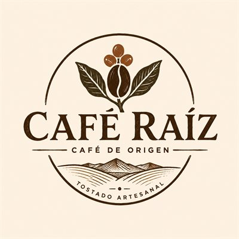
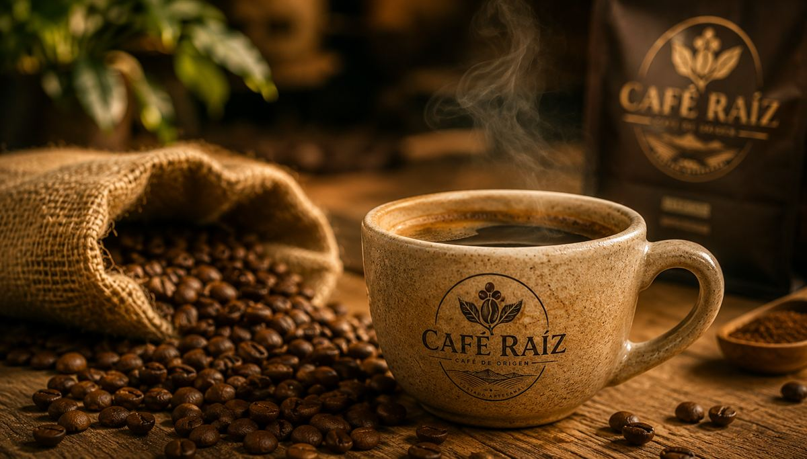
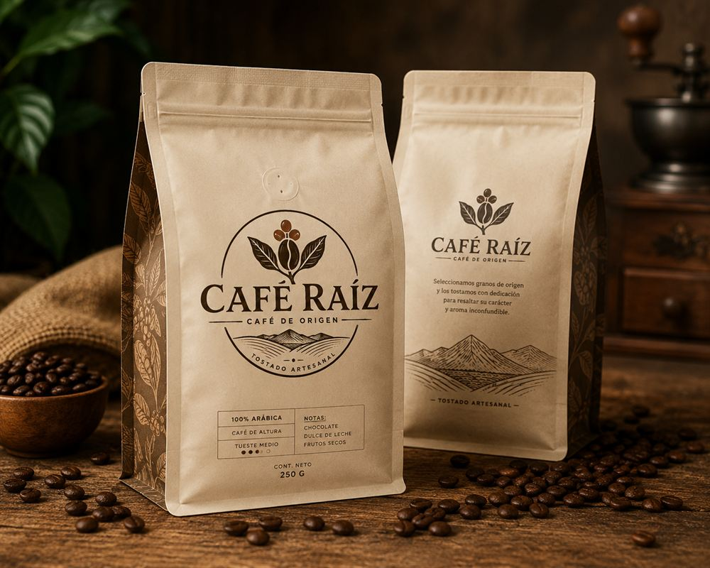

Misiones, Argentina
Don Aníbal
Tueste medio claro
NotasMiel y almendra
250 g$16.500
500 g$30.500
En grano o molido. Elegís al comprar.
Comprar

Compramos a productores pequeños, tostamos en lotes chicos y te lo llevamos fresco hasta tu taza.


¿Dudas?Escribinos por WhatsAppGranos de productores que conocemos por su nombre.
Tueste artesanal, en lotes chicos.
Café real, con fecha de tueste en cada bolsa.
Nuestros cafés
Todo empieza en la tierra, donde cada grano madura despacio y alguien lo cuida con las manos. A esas personas las conocemos por su nombre, y a ellas les compramos.
Después nos toca a nosotros: tostar en lotes chicos, con paciencia, hasta dar con el punto justo en que el grano suelta su aroma.
Nos desvela el detalle: de dónde viene, cuánto se tuesta, qué tan fresco llega. Por eso no hay atajos. Para que, al servir la taza, todavía se sienta la tierra de donde vino.
Arrancá por el de Don Aníbal: tueste medio claro, dulce, con miel y almendra. Y si querés, escribinos y te ayudamos a elegir.
Tostamos en lotes chicos y cada bolsa lleva su fecha de tueste.
Grano si tenés molinillo, porque dura más fresco. Molido si no: elegís la molienda al comprar.
Enviamos a todo el país y despachamos dentro de las 48 horas hábiles después del tueste.
Le pagamos un precio justo a cada productor y tostamos en lotes chicos, para que cada bolsa llegue fresca. Es lo que se nota en la taza.
Claro. Escribinos por WhatsApp.